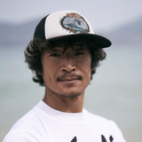
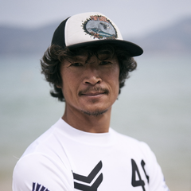

Coach Danny AI Agent — QA 검증 페이지 (§173-B / §173-D)
이 페이지는 검증 전용입니다 (noindex,nofollow).
각 카드의 [질문하기] 버튼 클릭 → 우하단 Coach Danny widget 자동 open → 답변 출력.
카테고리 ([FAQ] / [KB] / [Fallback]) 별로 응답 source 확인.
또한 콘솔에서 DMJAgent._findBestMatch('query'), DMJAgent._findKnowledgeMatches('query'), DMJAgent._botReplyFor('query') 직접 호출 가능.
1. Coach Danny Avatar — Danny 실제 사진 (§173-D · 2026-05-16)
Danny 결정 (2026-05-16): 플랫 마스코트 → 신뢰감 부족 판단으로 폐기. 정체성 "대니" → "Coach Danny"(옥덕필 코치 본인) 변경 + face-centered crop 사진으로 복원. WebP primary + PNG fallback, 4 사이즈 (48/80/160/240).
48px — chat bubble80px — widget header

160px — founder card

240px — hero
2. FAQ 매칭 시나리오 (Tier 1 — 짧은 답변)
윙포일 처음인데?
→ FAQ site-start
Find My Gear 어떻게 쓰나요?
→ FAQ fmg-howto
10축 스킬 진단은 뭔가요?
→ FAQ skill-assessment-start
회원 등급 할인율?
→ FAQ membership
이벤트 무료 컨설팅?
→ FAQ event-free-consult
Coach Danny가 누구야?
→ FAQ agent-self
3. KB RAG 시나리오 (Tier 2 — 깊은 canonical 답변)
96cm 마스트 진입 timing?
→ KB kb-mast-adv + safety
Goofy 가 더 적나요?
→ KB kb-stance-stats (Packheiser 2020)
약쪽 (weak side) 훈련?
→ KB kb-weak-side (Bishop·Promsri)
Lift 양력 방정식 ρ?
→ KB kb-lift-calc
선수 race Levitaz R6?
→ KB kb-pro-equipment
Levitaz vs Takoon 어느게 좋아요?
→ KB kb-brand-style-mapping
4. Fallback 시나리오 (Tier 3 — hallucination 차단)
asdfqwer xxxxx
→ Fallback (consulting@dmjgroup.kr)
화성에서 윙포일?
→ Fallback or low KB score
5. Phase 2 — 의도 분류 + 유도 대화 (slot-filling flow)
모호한 질문 → 의도 분류 → "적합도 문의" 는 slot-filling flow (실력→체중→풍속→예산→추천). 그 외 의도는 1-shot routing 또는 funnel chip.
이 보드 나한테 맞아?
→ fit-check → slot-filling flow 시작 (실력 chip)
초보인데 윙포일 가능할까요?
→ fit-check → flow
입문 셋업 추천해줘
→ setup-recommendation → 입문 레벨 deep-link
추천해줘
→ setup-recommendation (실력 미식별) → fit-check flow 유도
얼마야?
→ price-inquiry → 회원 할인 안내 + funnel
find my gear 어디 있어?
→ navigation → sitemap deep-link
Phase 2 콘솔 debug: DMJAgent._classifyIntent('이거 나한테 맞아?') → 의도 반환 DMJAgent._state.flow → 진행 중인 slot-filling flow 상태 ({intent, step, slots})
flow 진행 중 "취소"/"그만" 입력 → flow 중단
5. 콘솔 debug
DevTools 열고 콘솔에서 직접 호출:
DMJAgent._findBestMatch('윙포일 처음')
→ { entry, score }
DMJAgent._findKnowledgeMatches('96cm 마스트')
→ [{ chunk, score }, ...]
DMJAgent._botReplyFor('Goofy 비율')
→ { answer, page_links, related }
DMJAgent._knowledgeChunks()
→ 전체 KB chunks 배열 (48 chunks)
DMJAgent.clearHistory()
→ 채팅 기록 초기화 + 다시 greeting 표시
6. 모바일 fullscreen test
DevTools → Responsive Mode → iPhone SE (375×667) 또는 iPhone 12 (390×844) 로 전환 후 widget open → fullscreen 동작 확인.
7. 로그인 상태 분기 test
비로그인 vs 로그인 시 greeting 분기:
비로그인: "Coach Danny — 단무지공방 옥덕필 박사(Danny) 입니다 ✨ ..."